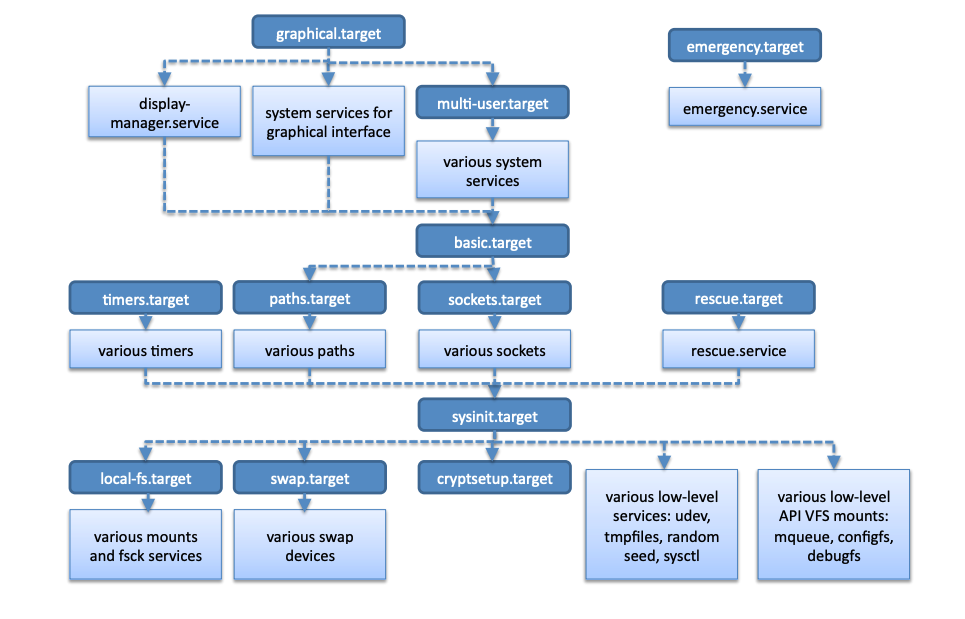
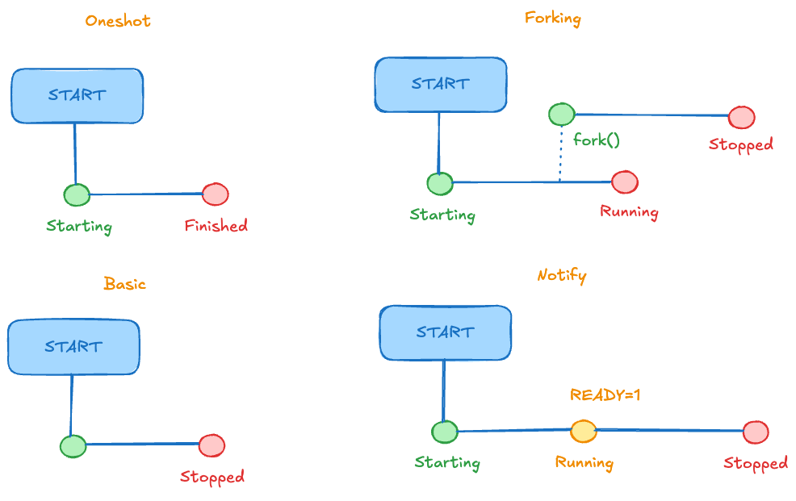

Administració i Manteniment de Sistemes i Aplicacions (AMSA)
Quan el kernel ha descomprimit l’initramfs, l’executa i en llança el programa /init com a procés amb PID 1: és el primer procés de l’espai d’usuari.
/init de l’initramfs prepara el sistema d’arxius arrel real (controladors, LUKS, LVM, fsck…) i el munta.switch_root allibera l’initramfs, canvia l’arrel a la partició real i executa /sbin/init.exec, el PID no canvia: el PID 1 de l’initramfs i el de systemd són el mateix procés, amb un programa diferent./sbin/init és un enllaç simbòlic a systemd.systemd i que el seu pare (PPID) és 0: el kernel./sbin/init apunta a systemd, però el nom init es conserva per compatibilitat.pstree mostra l’arbre de processos que penja del PID 1.wait() quan acabin; si no, queden com a zombies.El PID 1 no pot morir
Si el PID 1 acaba, el kernel entra en panic. Per això és un programa petit, estable i protegit.
El canvi de SysVinit a systemd a la majoria de distribucions va respondre a la necessitat de reduir el temps d’arrencada i de gestionar millor els serveis.
/etc/rc?.d/ executats un darrere l’altre (S##nom, K##nom). L’ordre és numèric, no declaratiu.journalctl.journald, logind, networkd, resolved, timers…). Cada component és un binari i un procés separat, però evolucionen acoblats i el PID 1 és el manager que els coordina.CVE-2024-3094 (CVSS 10.0). Una porta del darrere deliberada a la llibreria liblzma, dins de xz-utils, que permetia execució remota de codi a través de sshd.
| Data | Esdeveniment |
|---|---|
| 2021 | Un compte (JiaT75) comença a contribuir a xz i a altres projectes. |
| 2022 | Comptes sense historial pressionen el mantenidor, Lasse Collin, perquè cedeixi la gestió. |
| 2023 | JiaT75 és co-mantenidor i signa releases. |
| feb.-març 2024 | Versions 5.6.0 i 5.6.1 amb el codi maliciós. |
| 29 març 2024 | Andres Freund ho descobreix i ho publica a la llista oss-security. |
libsystemd. Debian i Fedora ho feien per poder cridar sd_notify.libsystemd depenia de liblzma, de manera que sshd acabava carregant-la..deb/.rpm per a x86-64 Linux amb glibc i GCC.RSA_public_decrypt d’sshd.sshd.sd_notify és un missatge trivial, i no calia carregar tota una llibreria per enviar-lo.xz-utils 5.4.x) no es va veure afectat.El PID 1 activa un target: una unitat que agrupa unitats i defineix un estat del sistema (equivalent als runlevels de SysVinit).
Una unitat és un recurs que systemd gestiona, descrit en un fitxer de configuració.
| Directori | Ús |
|---|---|
/etc/systemd/system/ |
Fitxers de l’administrador (màxima prioritat). |
/run/systemd/system/ |
Unitats transitòries; es perden en reiniciar. |
/usr/lib/systemd/system/ |
Fitxers dels paquets de la distribució. A Debian: /lib/systemd/system/. |
Si dues unitats tenen el mateix nom, guanya la del directori de més amunt a la taula: /etc s’imposa a /usr/lib.
Per modificar una unitat dels paquets sense tocar-ne l’original, fes servir un drop-in: sudo systemctl edit <unitat>. Per veure la configuració efectiva: systemctl cat <unitat>.
Després de canviar fitxers d’unitat a mà, executa sudo systemctl daemon-reload.
.service): defineix com s’inicia, s’atura i es supervisa un servei. Ex.: ssh.service (a Debian; sshd.service n’és un àlies)..socket): sockets d’escolta que poden activar un servei..device): dispositius detectats per udev..path): activa unitats quan canvia un fitxer o directori..timer): activa unitats en moments determinats (alternativa a cron)..target): agrupa unitats en estats del sistema.
Fitxer simplificat del servei CUPS (Common Unix Printing System):
After=network.target: ordre, no dependència. Si el target de xarxa no és a la transacció, CUPS no el demana.Type=notify: CUPS avisa systemd quan està llest.Also=: en fer enable/disable d’aquesta unitat, també s’habiliten/deshabiliten cups.socket i cups.path.WantedBy=printer.target: en habilitar-la es crea un enllaç a printer.target.wants/.systemd pot crear i escoltar el socket abans que el servei estigui en marxa.
cups.socket).Les dependències es declaren a la secció [Unit]. Cada tipus d’unitat n’afegeix algunes per defecte.
Requires=, però si l’altra queda inactiva per qualsevol motiu, aquesta s’atura.Requeriment i ordre són independents
Requires=B sense After=B arrenca A i B en paral·lel.
| Declaració a A | Resultat |
|---|---|
Requires=B + After=B |
B s’arrenca primer; A només si B funciona. |
Requires=B |
A i B s’arrenquen alhora. |
After=B |
Cap dependència: ordena només si les dues ja són a la transacció. |
Quan es demana una acció (p. ex. systemctl start ssh), systemd construeix una transacció: un conjunt de feines (jobs) coherent, que es valida abans de tocar res.
start d’una unitat ja activa).After=/Before= es construeix un graf. Un cicle impedeix trobar un ordre vàlid; systemd intenta trencar-lo eliminant una feina no essencial (ho registra al journal) i, si no pot, la transacció falla.La validació prèvia fa que la transacció sigui tot o res: o es pot executar de forma coherent, o no s’encua cap feina.
systemctl (I): gestió de serveisLes accions que modifiquen l’estat requereixen privilegis (sudo); les de consulta, no.
| Comanda | Descripció |
|---|---|
systemctl status <unit> |
Estat, darreres línies del journal i arbre de processos (cgroup). |
sudo systemctl start <unit> / stop |
Arrenca / atura ara. |
sudo systemctl restart <unit> |
Atura i torna a arrencar. |
sudo systemctl reload <unit> |
Torna a llegir la configuració sense aturar (si el servei ho suporta). |
sudo systemctl enable <unit> |
Crea els enllaços de [Install]: arrencarà a la propera arrencada. No l’arrenca ara. |
sudo systemctl enable --now <unit> |
Habilita i arrenca alhora. |
sudo systemctl disable <unit> |
Elimina els enllaços de [Install]. |
sudo systemctl mask <unit> |
Enllaça la unitat a /dev/null: ni manual ni per dependència. |
systemctl (II): consulta| Comanda | Descripció |
|---|---|
systemctl is-active <unit> |
Comprova si està activa. |
systemctl is-enabled <unit> |
Comprova si arrencarà automàticament. |
systemctl list-units |
Unitats carregades actualment. |
systemctl list-unit-files |
Fitxers d’unitat disponibles i el seu estat d’habilitació. |
systemctl list-dependencies <unit> |
Arbre de dependències d’una unitat. |
systemctl list-jobs |
Feines pendents o en execució. |
systemctl --failed |
Unitats que han fallat. |
systemctl cat <unit> |
Mostra el fitxer d’unitat (amb els drop-ins). |
Per veure el journal del sistema cal ser root o pertànyer als grups adm o systemd-journal.
sudo tee perquè la redirecció > s’executa amb els privilegis de l’usuari, no els de sudo.<<'EOF' (amb cometes) evita que el shell interpreti el contingut.Type=oneshot: el servei fa una feina i acaba.Errors típics
daemon-reload després d’editar el fitxer.enable (futur) amb start (ara).status mostri «active» en un oneshot: després d’acabar queda inactive (dead) si no hi ha RemainAfterExit=yes.reload amb restart.[Install][Install] només s’utilitza per enable i disable; systemd no la llegeix per arrencar la unitat.WantedBy=multi-user.target: en habilitar-la es crea un enllaç a multi-user.target.wants/; arrencarà amb el target multiusuari (runlevel 3).Also=: en habilitar-la, s’habiliten també les unitats indicades.Alias=: nom alternatiu (enllaç simbòlic) amb el mateix tipus d’unitat.[Service] (I)| Opció | Descripció |
|---|---|
Type= |
Quan es considera iniciat el servei: simple, exec, forking, oneshot, notify, dbus, idle. |
ExecStart= |
Comanda que inicia el servei. |
ExecStop= |
Comanda que l’atura (si no, es fa servir SIGTERM). |
ExecReload= |
Comanda que en recarrega la configuració. |
RemainAfterExit= |
Manté la unitat com a activa després que el procés acabi (típic en oneshot). |
Restart= |
Quan es reinicia: no, on-failure, always… |
User= / Group= |
Usuari i grup amb què s’executa. |
[Service] (II)| Opció | Descripció |
|---|---|
Environment= |
Variables d’entorn del servei. |
WorkingDirectory= |
Directori de treball. |
PIDFile= |
Fitxer amb el PID del procés principal; només té sentit amb Type=forking. |
TimeoutStartSec= |
Temps màxim d’arrencada. |
TimeoutStopSec= |
Temps màxim d’aturada. |
StandardOutput= / StandardError= |
On van les sortides; per defecte, al journal. |
ExecStart= i no hi ha Type= ni BusName=. systemd el considera iniciat tan bon punt crea el procés (fork()), sense esperar res més.simple, però espera que el binari s’hagi executat (execve()); detecta errors com un fitxer inexistent.fork() i el pare surt; el servei es considera iniciat quan el pare acaba. Clàssic dels dimonis tradicionals.RemainAfterExit=yes.sd_notify).simple, però retarda l’execució fins que s’han enviat les altres feines (màxim 5 s). S’usa per evitar que la sortida a la consola s’entrelliï.
Quan s’han carregat els serveis, apareix un punt d’entrada (getty a la consola, sshd per xarxa, un gestor gràfic).
systemd-logind registra la sessió i en gestiona el cicle de vida (loginctl list-sessions).| Tipus de shell | Fitxers que llegeix |
|---|---|
| Login | /etc/profile (que carrega /etc/profile.d/*.sh) i el primer que existeixi de ~/.bash_profile, ~/.bash_login, ~/.profile. |
| Interactiu, no login | /etc/bash.bashrc (Debian; /etc/bashrc a RHEL) i ~/.bashrc. |
| En tancar un shell de login | ~/.bash_logout. |
~/.profile per defecte carrega ~/.bashrc, i així un shell de login també aplica la configuració personal.~/.bash_history és un fitxer de dades (l’històric); no s’executa.